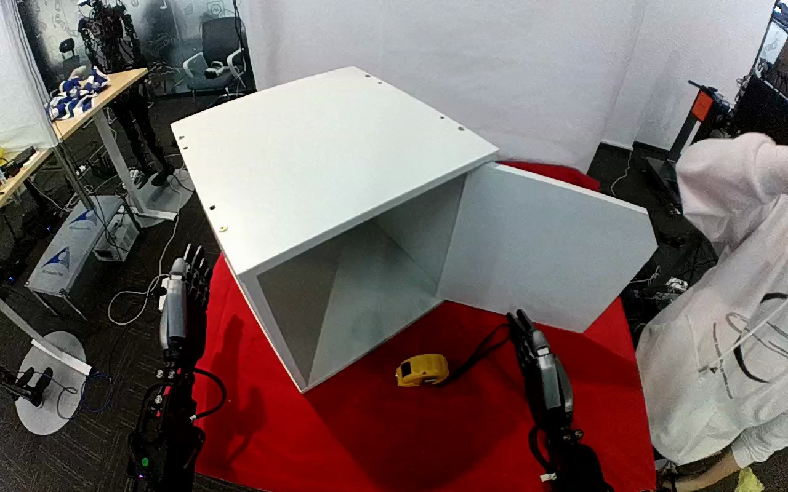

ActionNet · 01JHFA7YZJTTECHOFB
01jhfa7yzjttechofb

Visual review action_review.json
{
"dataset": "ActionNet",
"episode_id": "01JHFA7YZJTTECHOFB",
"prompt_protocol": "humanoid_action_v1",
"prompt_provenance": "visually_authored_from_video_and_initial_frame",
"review_scope": "One dedicated agent reviewed the complete unchanged 395-frame top/rgb.mp4 and the generation first frame. Full single-task sequence retained.",
"source_video": "../../original/top/rgb.mp4",
"conditioning_first_frame": "../first_frame.png",
"generation_video": "../../original/top/rgb.mp4",
"action_prompt": "../actiongeneration_prompt.txt",
"source_frame_start": 0,
"source_frame_end_exclusive": 395,
"fps_rational": "30/1",
"resolution": [
1280,
800
],
"source_annotation": {
"verbatim_task_prompt": "Pick up the tape measure,place it into the box,and close the door.",
"task_prompt_path": "../../original/task_prompt.txt"
},
"anatomical_side_evidence": {
"active_arm": "hand entering from the lower-right edge of the initial image",
"initial_frame_evidence": "Two forearm/hand assemblies enter from the lower image edges: one near the lower-left (fingers pointing upward, stationary) and one at the lower-right (fingers pointing upward, beside the yellow tape measure). The active hand is the lower-right one. Torso and shoulders are outside the image and the camera pose relative to the robot body is not independently established, so anatomical left/right is not claimed.",
"confidence": "Visible-arm identity is unambiguous; anatomical left/right is not independently established."
},
"arm_roles": {
"lower_right_visible_arm": "Sole manipulating hand: fingers approach from above and the thumb from below-left to enclose the tape measure on the mat, bear it during lift and transport into the cabinet, lower it to the cabinet floor and open to release, withdraw to the right, then reach the open door at the right side of the cabinet and push it shut with extended fingertips, and finally retract upright without touching the door.",
"lower_left_visible_arm": "Remains upright and stationary at the lower-left edge for the entire clip; no contact with the tape measure, cabinet or door."
},
"coordination": "Single-hand pick, placement and door closing. No hand-to-hand transfer or bimanual stabilization. A person in a white hooded top is visible at the right edge throughout, handling something near their lap/waist; no contact with the robot, cabinet, tape measure or door is observed.",
"chronology": [
{
"frames": [
0,
46
],
"observation": "Open cabinet (front opening facing the camera, door swung open at image right) stands on a red mat with a yellow tape measure on the mat in front of it. The lower-right hand is upright and clear; the lower-left hand is upright and stationary. The person at right moves their arms. The lower-right hand starts to tilt/reach toward the tape measure near the end of this interval."
},
{
"frames": [
48,
100
],
"observation": "The lower-right hand extends toward the tape measure with fingers open above/beyond it and the thumb below-left. Frame 60 shows the open hand beside the tape; by frame 80 to 90 the fingers lie over the top of the tape and the thumb on its lower/near side; frame 100 shows fingers on top of the tape with the hand still open."
},
{
"frames": [
102,
134
],
"observation": "Fingers and thumb close on opposing sides of the tape measure (frame 110 to 130 show it enclosed, fingers on top and thumb underneath). No second-hand contact."
},
{
"frames": [
136,
194
],
"observation": "The hand bears the tape measure (frames 136, 142, 148, 160 show it held with fingers above and thumb below), lifts it off the mat and carries it leftward and into the cabinet interior (frame 170 and 190 show it inside the opening near the left interior wall) while the wrist turns it."
},
{
"frames": [
196,
212
],
"observation": "Thumb separates and fingers open (frame 196); by frame 200 the tape measure rests on the cabinet floor against the left interior wall with its strap trailing, and the hand is open and retracting (frames 206 and 212). The exact first floor-contact frame is partially occluded by the hand."
},
{
"frames": [
214,
262
],
"observation": "The hand withdraws out of the cabinet and moves right (upright at frame 216 to 224, near the right image edge by frame 230 and 240). The tape measure remains on the cabinet floor and is not touched again."
},
{
"frames": [
264,
330
],
"observation": "The hand, mostly occluded by the open door and close to the person's forearm at the right image edge, moves behind the open door's right edge (frames 262 to 296). At frames 304 to 328 the door begins to swing toward the opening as the hand pushes it from the right side; fingers are pointed at the door edge/face and are partly occluded by the door."
},
{
"frames": [
332,
358
],
"observation": "The door swings from open through a near edge-on position (frame 336 to 344) to nearly covering the cabinet opening (frame 352 to 358) while the extended fingertips push against it; at frames 344 to 358 the hand is in front of the door's outer face."
},
{
"frames": [
360,
394
],
"observation": "The hand pulls back to the right and stands upright with fingers pointing up, no longer touching the door (frames 362 to 394). The door ends nearly closed over the opening, angled slightly, with a narrow dark gap visible along its upper-left edge; the tape measure is no longer visible. Final frame 394 shows the hand clear and still."
}
],
"observed_outcome": {
"status": "successful_visible_placement_and_door_nearly_closed",
"description": "Tape measure is released onto the cabinet floor and remains there; the same hand then pushes the open door to a nearly closed position over the opening, with a narrow dark gap still visible along its upper-left edge, and retracts upright.",
"selected_action_outcome": "tape_placed_in_cabinet_and_door_pushed_nearly_shut",
"source_overall_success_label": "not used to infer outcome"
},
"source_annotation_discrepancies": [
"The source calls the container a box; the observed container is an open-front white cabinet (box-like shelf unit) with a hinged door. The usable prompt says cabinet.",
"The source gives the order pick up, place, close the door; the observed order matches. Whether the door ends fully latched or flush cannot be established because a narrow gap is visible in the final frames."
],
"uncertainties": [
"Torso and shoulder attachment are outside the image, and camera pose or mirroring is not independently established. Anatomical left/right is uncertain; prompt uses the unambiguous hand entering from the lower-right edge.",
"The exact first cabinet-floor contact frame is partially occluded by the hand and tape measure.",
"Hand-to-door contact during frames 262 to 330 is partly occluded by the open door and the nearby person's arm; the pushed surface during the early swing is inferred from the door's rotation and the visible fingertip contact at frames 344 to 358.",
"Top camera has slight source-view motion across the sequence; required fixed-camera generation constraint is retained verbatim.",
"Whether the final door pose is fully closed is not established; a narrow dark gap is visible."
],
"inspection_coverage": {
"total_decoded_frames": 395,
"overview_frame_indices": {
"start": 0,
"stop_inclusive": 394,
"step": 2,
"count": 198
},
"overview_method": "Decoded RGB every second frame into seventeen temporary 4-by-3 contact sheets (480 px wide tiles) outside dataset folders; reviewed all sheets.",
"native_resolution_frames": [
0,
60,
80,
90,
100,
104,
110,
120,
130,
136,
142,
148,
150,
160,
170,
190,
196,
200,
206,
212,
216,
224,
230,
240,
250,
262,
280,
296,
304,
312,
320,
328,
336,
344,
352,
362,
372,
380,
388,
394
],
"native_resolution": [
1280,
800
],
"initial_png_inspected_after_full_sequence": true,
"temporary_evidence_location": "/tmp/an_review_01JHFA7YZJTTECHOFB (removed after review; not under generation input)",
"retained_evidence_frame_directories": false
},
"preservation": {
"whole_original_single_task_clip_retained": true,
"crop": false,
"shorten": false,
"resize": false,
"reencode": false,
"source_and_generation_sha256_equal": true
},
"prompt_word_count": 93
}